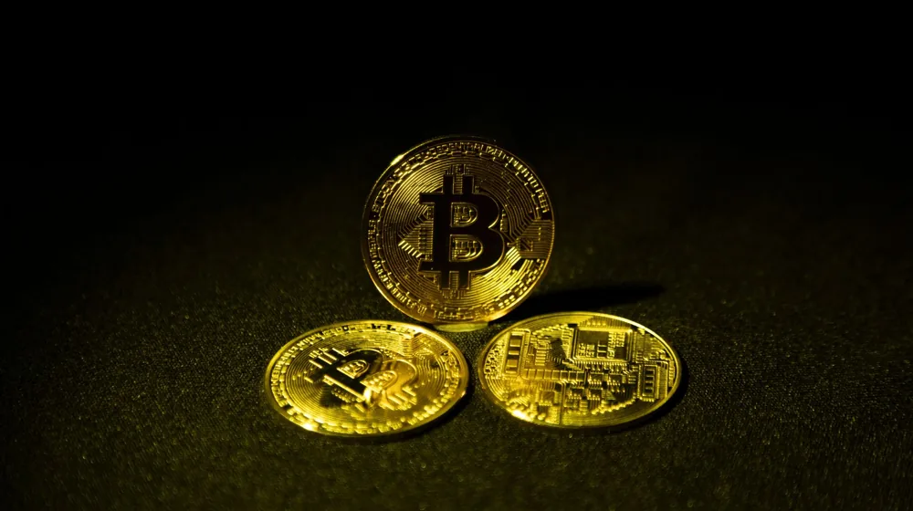

금 투자, 골드바 vs 골드뱅킹? 핵심 질문 7가지로 완벽 정리
사진: Aurelijus U. / Pexels (무료 이미지, 출처 표기)
금 투자, 왜 지금 주목해야 할까요?

최근 경기 변동성이 커지면서 안전자산인 금에 대한 관심이 높아지고 있습니다. 금은 인플레이션 헤지(위험 분산) 수단으로 여겨지며, 위기 상황에서 가치가 상승하는 경향이 있어 투자 포트폴리오의 안정성을 높이는 역할을 합니다. 특히 원자재 가격 상승과 글로벌 경제 불확실성이 지속되면서, 금은 전통적인 투자 자산을 넘어 새로운 기회로 인식되고 있습니다.
금 투자 방식: 골드바 vs 골드뱅킹, 어떤 차이가 있나요?
금 투자는 크게 실물 금을 소유하는 '골드바' 방식과 은행 계좌를 통해 금 시세에 투자하는 '골드뱅킹(금 통장)' 방식으로 나눌 수 있습니다. 두 방식은 장단점이 뚜렷하여 자신의 투자 목적과 스타일에 맞춰 선택하는 것이 중요합니다. 2026년 10월 기준으로 주요 특징을 비교하면 다음과 같습니다.
골드바 구매 시, 어떤 점을 확인해야 할까요?
골드바는 한국조폐공사(KOMSCO)와 같이 공신력 있는 기관에서 발행한 제품을 선택하는 것이 중요합니다. 시중에는 다양한 금 제품이 있지만, 순도와 중량을 정확히 보증하는 제품인지 확인해야 합니다. 일반적으로 금은방이나 은행, 증권사에서 구매할 수 있으며, 구매 시에는 부가가치세(10%)가 부과됩니다.
구매 후 보관은 도난의 위험이 있으므로 개인 금고나 은행 대여금고를 이용하는 것이 일반적입니다. 대여금고 이용 시에는 별도의 수수료가 발생할 수 있습니다. 또한, 실물 금은 재판매 시 매입 업체에 따라 수수료가 발생할 수 있으므로, 구매처를 신중하게 선택하고 보증서 등을 잘 보관해야 합니다.
골드뱅킹, 어떤 장점과 단점이 있나요?
골드뱅킹은 은행에서 금 통장을 개설하여 통장 안의 돈으로 금 시세에 따라 금을 구매하는 방식입니다. 0.01g 단위의 소액 투자도 가능해 적은 돈으로도 금 투자를 시작할 수 있다는 장점이 있습니다. 또한, 실물을 직접 보관할 필요가 없어 도난이나 분실의 위험이 없고, 은행 앱을 통해 간편하게 매매할 수 있어 환금성이 높습니다.
하지만 골드뱅킹은 은행 예금자 보호 대상이 아니므로, 은행이 파산할 경우 원금을 잃을 수 있는 위험이 있습니다. 또한, 실물 인출을 원할 경우 인출 시점의 금 시세에 10%의 부가가치세를 추가로 내야 합니다. 이처럼 간편함 뒤에 숨겨진 리스크를 충분히 이해하고 투자해야 합니다.
금 투자로 수익을 얻으면 세금은 어떻게 될까요?
금 투자 시 세금은 투자 방식에 따라 달라집니다. 2026년 10월 기준으로 다음과 같은 세금 체계를 이해해야 합니다.
- 골드바 (실물 금): 구매 시 10%의 부가가치세가 부과됩니다. 실물 금을 판매하여 얻은 시세차익에 대해서는 비과세입니다. 하지만 양도소득세가 부과될 수 있는 고가 미술품이나 골동품으로 분류될 수 있는 특수한 금 제품은 예외일 수 있습니다.
- 골드뱅킹 (금 통장): 매매 차익에 대해 배당소득세(15.4%, 지방소득세 포함)가 부과됩니다. 금융소득종합과세 대상이 될 수 있으므로, 연간 금융소득이 2천만 원을 초과하는 경우 주의해야 합니다. 실물 인출 시에는 10%의 부가가치세가 부과됩니다.
- 금 ETF/선물: 금 관련 상장지수펀드(ETF)나 선물에 투자할 경우, 매매 차익에 대해 금융투자소득세(2025년부터 시행 예정)나 양도소득세가 부과될 수 있습니다.
각 세금 관련 사항은 개인의 소득 상황과 투자 규모에 따라 달라질 수 있으므로, 정확한 내용은 국세청 또는 세무 전문가와 상담하는 것이 가장 확실합니다.
금 투자 시 꼭 알아야 할 주의사항은?
금 투자는 안전자산으로 분류되지만, 모든 투자와 마찬가지로 위험이 따릅니다. 다음 사항들을 유의해야 합니다.
- 예금자 보호 여부 확인: 골드뱅킹은 예금자 보호 대상이 아닙니다. 은행의 건전성을 확인하고 투자해야 합니다.
- 환율 변동성: 국제 금 가격은 달러 기준으로 책정되기 때문에, 원/달러 환율 변동은 금 투자 수익률에 직접적인 영향을 미칩니다. 금 가격이 올라도 환율이 하락하면 수익이 감소할 수 있습니다.
- 수수료와 세금: 구매 및 판매 시 발생하는 각종 수수료와 세금을 정확히 이해하고 계산해야 실질적인 투자 수익률을 파악할 수 있습니다. 특히 골드바는 부가가치세가, 골드뱅킹은 배당소득세가 발생합니다.
- 시장 상황 주시: 금 가격은 국제 정세, 경제 지표, 통화 정책 등 다양한 요인에 의해 변동합니다. 꾸준히 관련 뉴스를 확인하고 시장 상황을 분석하는 것이 중요합니다.
금 투자는 장기적인 관점에서 접근하는 것이 좋으며, 본인의 투자 목표와 위험 감수 수준에 맞춰 신중하게 결정하시길 바랍니다. 정확한 사항은 투자하려는 금융기관의 공식 홈페이지나 금융감독원 자료를 통해 다시 확인하시길 권장합니다.
🔗 이 글도 함께 보면 좋아요: 삼성전자 주가, 2024년 투자 전 꼭 알아야 할 3가지 핵심 요소
관련 추천 상품
이 포스팅은 쿠팡 파트너스 활동의 일환으로, 이에 따른 일정액의 수수료를 제공받습니다.
자주 묻는 질문(FAQ) (탭하면 펼쳐져요)
Q1. 금 투자를 왜 하는 건가요?
A. 금은 인플레이션 헤지(위험 분산) 수단으로 여겨지며, 경기 변동성이 커질 때 안전자산으로서 가치가 상승하는 경향이 있습니다. 이는 투자 포트폴리오의 안정성을 높이고, 글로벌 경제 불확실성에 대비하는 목적으로 활용됩니다.
Q2. 골드바와 골드뱅킹은 어떤 차이가 있나요?
A. 골드바는 실물 금을 직접 구매하여 소유하는 방식이고, 골드뱅킹은 은행 계좌를 통해 금 시세에 연동하여 투자하는 방식입니다. 골드바는 실물 소유 만족감과 비과세(매매차익)가 장점이지만 보관이 어렵고 부가가치세가 붙습니다. 골드뱅킹은 소액 투자와 높은 환금성이 장점이나 예금자 보호가 안 되고, 매매차익에 배당소득세가 부과됩니다.
Q3. 골드바는 어떻게 구매하고 보관해야 하나요?
A. 골드바는 한국조폐공사(KOMSCO) 등 공신력 있는 기관의 제품을 은행, 증권사, 금은방 등에서 구매할 수 있습니다. 구매 시 10%의 부가가치세가 부과됩니다. 보관은 도난 위험 때문에 개인 금고나 은행 대여금고를 이용하는 것이 일반적이며, 대여금고 이용 시 수수료가 발생할 수 있습니다.
Q4. 골드뱅킹은 어떤 장점과 단점이 있나요?
A. 골드뱅킹은 0.01g 단위 소액 투자가 가능하고, 실물 보관의 번거로움이 없어 도난·분실 위험이 없습니다. 또한 은행 앱을 통해 간편하게 매매할 수 있어 환금성이 높다는 장점이 있습니다. 단점으로는 예금자 보호 대상이 아니며, 실물 인출 시 10%의 부가가치세가 부과되고 매매차익에 배당소득세가 발생한다는 점이 있습니다.
Q5. 금 투자로 수익을 얻으면 세금은 어떻게 부과되나요?
A. 골드바는 구매 시 10% 부가가치세가 붙지만, 매매차익에 대해서는 비과세입니다. 골드뱅킹은 매매차익에 대해 15.4%(지방소득세 포함)의 배당소득세가 부과되며, 실물 인출 시 10%의 부가가치세가 발생합니다. 금 ETF/선물은 금융투자소득세(2025년 예정)나 양도소득세가 부과될 수 있습니다. 정확한 사항은 세무 전문가와 상담하는 것이 좋습니다.
Q6. 금 투자 시 꼭 알아야 할 주의사항은?
A. 금 투자는 예금자 보호가 안 되고, 원/달러 환율 변동에 따라 수익률이 달라질 수 있습니다. 또한, 구매 및 판매 시 발생하는 수수료와 세금을 정확히 파악해야 합니다. 국제 정세, 경제 지표 등 금 가격에 영향을 미치는 시장 상황을 꾸준히 주시하며 장기적인 관점으로 접근하는 것이 중요합니다.